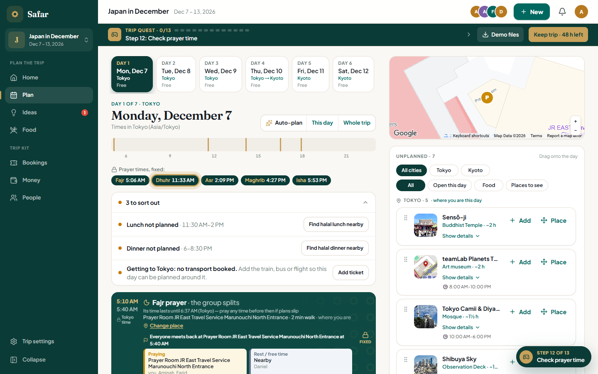

Safar.
One shared trip for Muslim travellers and mixed groups.
Team Ds Gang
Chong Pohyi · Teoh Xi Xian · Tan Wei Feng

Four friends.
One day in Tokyo.
Lunch looks settled until one person checks the broth and another checks the prayer time.
A food choice can exclude a member. A missed prayer window changes the rest of the day.

Start with
the people.
The demo starts with four sample travellers. Their preferences are example data, not user research results.

Current guest demo · group preferences
Show the evidence.
Then decide.
A nearby result may be listed halal, likely, pork-free or unchecked.
A food conflict can lead to a middle ground or a short split with a regroup point.
The trip lead reviews the option. Travellers confirm strict dietary needs with the venue.


Current app screens · Food and Ideas
Prayer belongs
in the plan.
Local calculations put prayer windows beside travel, meals and booked stops.
Auto-plan previews a proposal before the trip lead applies it.
Travellers can check the times against their preferred local authority.


Current app screens · prayer context and day plan
Now, the trip
in action.
Follow one decision from group needs to the day plan.

Guest Japan trip · no account required
From needs to a day everyone can use.
7:00 · PeopleShow member needs and fixed bookings.7:35 · FoodCompare source and confidence labels.8:15 · DecisionReview the Ichiran warning and options.8:55 · PlanPreview bookings, travel and prayer windows.